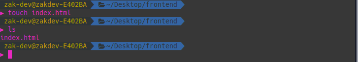

Apa itu CLI?
Selamat datang di Petualangan Command Line, sebelum kita mulai bertualang ada beberapa hal yang harus kita ketahui terlebih dahulu agar Petualangan kita menjadi lebih seru dan menarik Command Line atau biasa orang-orang menyebutnya sebagai CLI (Command Line Interface) adalah sebuah tools untuk melakukan interaksi dan digunakan untuk mengetik perintah teks. Sekarang penggunaan CLI terhadap komputer memang sudah jarang kita temukan. Hal ini karena para pengguna lebih berminat menggunakan GUI atau Graphic User Interface sebagai perantara antara pengguna dengan komputer. Mereka berpendapat bahwa GUI lebih mudah digunakan karena menyediakan tampilan grafis. Dengan begitu, para pengguna lebih mudah di dalam mengoperasikan komputer. Berbeda dengan CLI yang hanya memiliki antarmuka berupa teks dengan background gelap. Bagi orang yang baru pertama kali melihatnya tentu saja akan langsung malas ketika harus menggunakan CLI. Meskipun sekarang penggunaan GUI lebih banyak, namun bukan berarti CLI sudah tidak dibutuhkan. Para pengguna komputer yang sudah ahli sering menggunakan CLI untuk memberikan perintah kepada komputer. Misalnya pada saat ingin mengelola maupun mengurus server, administrasi, hosting web, keamanan, dan lain-lain. Bahkan CLI menjadi sistem andalan bagi para peretas atau hacker. Anda pun pasti pernah melihat film yang memperlihatkan adegan pembobolan server di mana tampilan di komputer hanya berupa teks dan itulah tampilan CLI.
Membuat File
Langkah pertama Petualangan kita dimulai dari membuat file tapi sebelum itu kita harus melewati sebuah lembah GUI dan di ujung lembah sanalah kita akan menemukan pedesaan bernama Terminal dan selamat datang di Desa Terminal dan ucapkan selamat tinggal kepada lembah GUI. Mari kita telusuri ada hal menarik apa saja di desa Terminal ini tapi sebelum menelusuri lebih jauh lagi mari kita lihat penampakan desa ini dari luar gerbang pedesaan dengan klik kanan kemudian open in terminal atau melalui show application kemudian cari terminal.
Seperti itulah penampakan desa Terminal. Kemudian mari kita jelajah kembali ada apa aja sih di desa ini, sepertinya kita menemukan hal menarik yaitu membuat file. untuk membuat File maka kita dapat menggunakan perintah touch namafile dan akan menjadi sebuah file baru yang masih kosong yang terletak pada Home seperti ini
kemudian bukan hanya buat file saja di desa Terminal ini kita juga dapat melihat isi dari file tersebut tapi sebelum itu kita edit terlebih dahulu filenya karena masih kosong hehe atau bisa juga pakai file lain yang sudah ada datanya dan langsung saja untuk menampilkan file gunakan perintah cat namafile
Hingga saat ini kita telah berhasil membuat dan menampilkan file masih banyak lagi hal yang belum kita jelajahi di desa Terminal ini, lets go mari kita menjelajah lagi!!
Membuat Direktori
Wah ada hal menarik lagi! ternyata kita juga dapat membuat direktori, tapi sebelum itu apa sih direktori itu? menurut wikipedia Sebuah direktori adalah komponen dari sistem berkas yang mengandung satu berkas atau lebih atau satu direktori lainnya atau lebih, yang disebut dengan subdirektori. Dalam banyak komputer, direktori dikenal sebagai folder, atau drawer,[1] Batasan jumlah berkas atau subdirektori yang dapat ditampung dalam sebuah direktori tergantung dari sistem berkas yang digunakan, meskipun sebagian sistem berkas tidak membatasinya (batasan tersebut disebabkan ukuran media penyimpanan di mana direktori berada). Sebuah direktori yang mengandung satu direktori atau lebih disebut sebagai parent directory dari direktori-direktori tersebut, dan setiap direktori yang dikandung di dalam direktori disebut sebagai child directory. Struktur direktori seperti ini lazim disebut sebagai struktur hierarkis direktori, atau sering juga disebut sebagai pohon direktori. Bingung? wkwk tenang saya pun bingung juga, tapi simplenya gini direktori itu adalah folder untuk penyimpanan file. untuk membuat direktori gunakan perintah mkdir namaDirektori
Catatan: Buat direktori baru di desktop agar mudah di temukan
Sekarang kita buat file baru dengan perintah yang sudah kita pelajari sebelumnya yakni touch namaFile Tapi sebelum itu, mungkin kita akan bertanya-tanya, "Kalau kita tambah di sini maka file baru akan berada di desktop dong bukan di folder frontend tersebut?" Betul! untuk mengatasi hal tersebut kita dapat gunakan perintah cd untuk berpindah direktori tapi ada satu lagi yang saya lupa bahas yakni bagaimana kita mau berpindah direktori tapi kita tidak tahu daftar file dan direktori apa saja yang ada di desktop ini, untuk mengatasi hal tersebut perkenalkan ls ls adalah sebuah perintah untuk menampilkan konten dari direktori
Nah lebih mudah kan? Kita dapat melihat daftar folder atau file apa saja pada desktop, oke langsung saja kita berpindah ke direktori frontend dengan cara cd frontend
setelah itu untuk memastikan bahwa kita berada pada direktori frontend tersebut di desa Terminal ini ada sebuah fitur yang dapat membantu kita yaitu pwd pwd adalah singkatan dari Print working direktori yang berfungsi untuk mengetahui di mana saat ini kita berada
nah saat ini Anda berada di direktori frontend, langsung saja tambahkan file baru touch index.html dan gunakan perintah ls untuk memastikan kembali apakah file tersebut sudah di tambahkan ke direktori tersebut
Sampai di sini kita telah berhasil membuat direktori, berpindah direktori, melihat daftar file dalam direktori tapi perjalanan Petualangan belum lah berakhir, masih banyak lagi yang belum kita jelajahi di desa Terminal ini. lets go!!
Direktori Induk
Setelah kita belajar bagaimana berpindah directory kini saatnya kita mempelajari bagaimana berpindah ke direktori induk, tapi agar lebih mudah memahami mari kita buat sebuah struktur direktori seperti ini
Langsung saja kita buat struktur folder sesuai gambar. pertama kita akan buat 3 buah direktori dengan nama style,script dan html untuk membuat direktori gunakan perintah mkdir namaDirektori
karena sebelumnya kita sudah buat file dengan nama index.html maka kita pindahkan file tersebut ke dalam direktori html dengan perintah mv file namaDirektori
nah setelah itu bagaimana caranya kita berpindah dari direktori html ke direktori induk yaitu frontend?
Gunakan perintah cd..
dan Anda telah berhasil berpindah ke direktori induk dan untuk memastikan seperti biasa pwd dulu hehe
Mengubah Nama FIle dan Direktori
Untuk mengubah nama file dan direktori kita dapat gunakan perintah mv nama_file_lama nama_file_baru dan untuk mengubah nama direktori caranya pun sama yakni mv nama_direktori_lama nama_direktori_baru
Nah untuk direktori sama aja silahkan di coba sendiri ya hehe
Menghapus File dan Direktori
Sampai juga di akhir Petualangan kita yang begitu panjang di sini kita akan mempelajari bagaimana menghapus file dan direktori? untuk menghapus file atau direktori di desa Terminal ini kita dapat gunakan perintah. rm namafile untuk menghapus file sedangkan untuk menghapus direktori gunakan rm -r namaDirektori

Sampai jumpa di Petualangan berikutnya!! jika tulisan ini bermanfaat jangan lupa share ke teman - teman yang lain agar bisa belajar juga, terima kasih wassalamualaikum wr wb